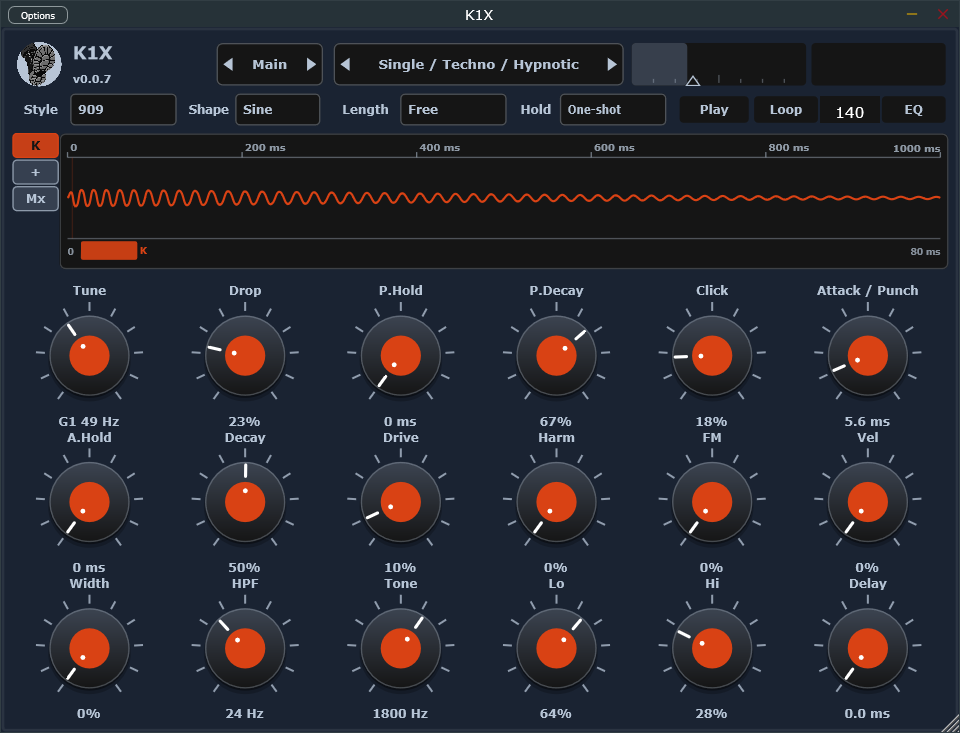
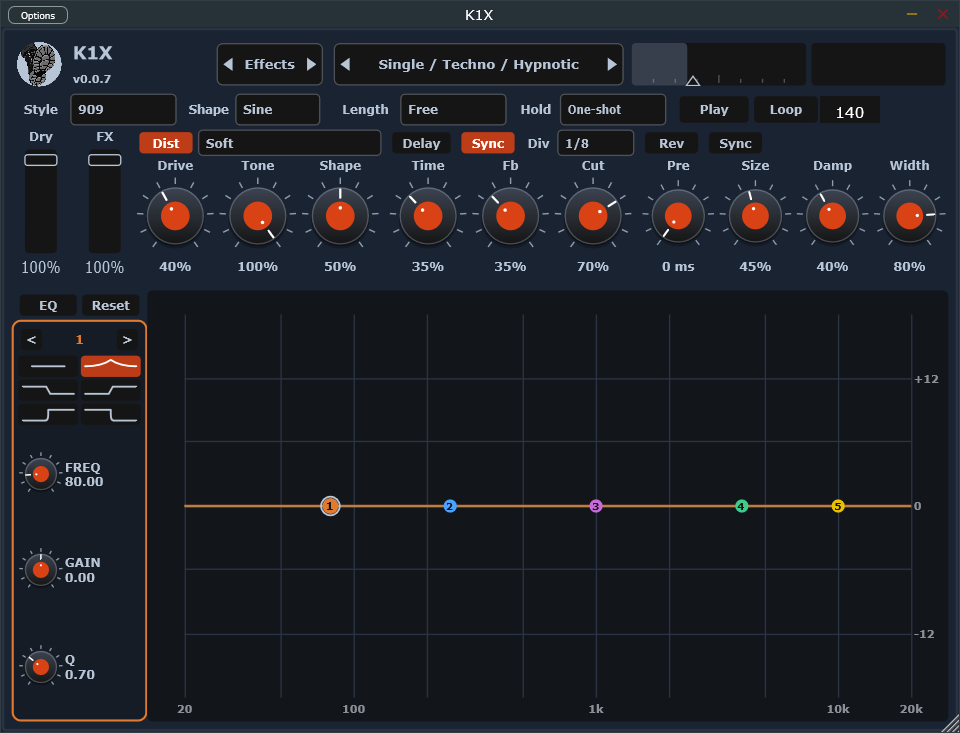
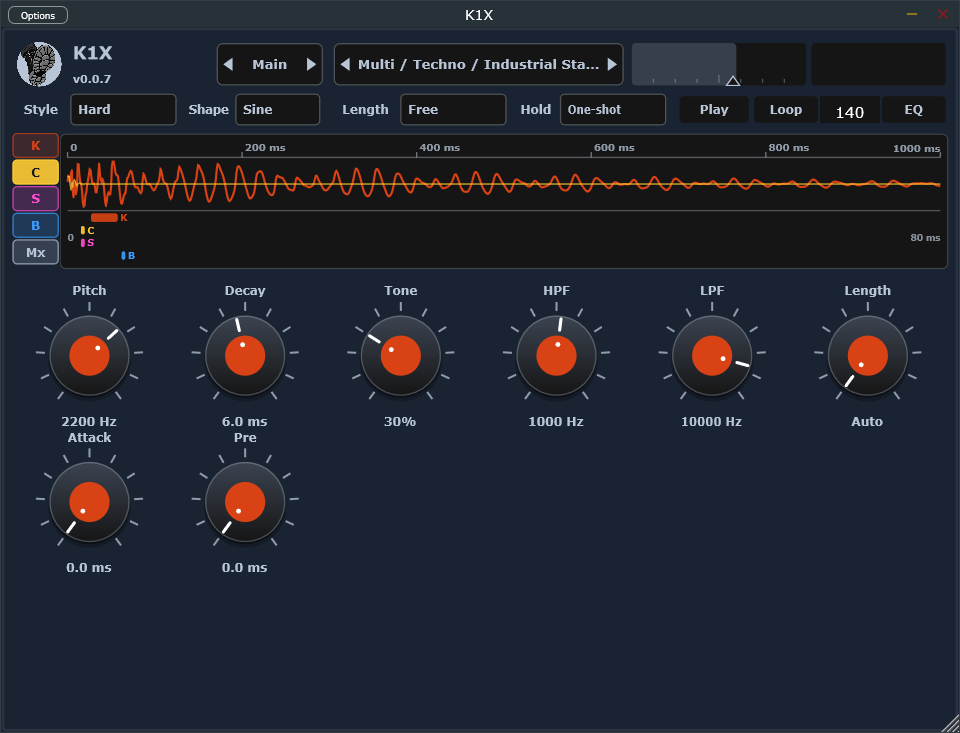
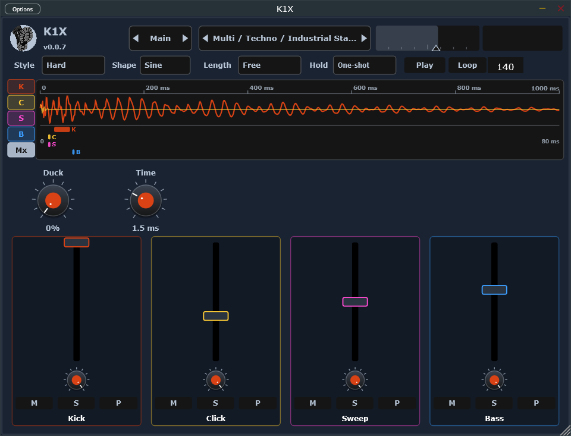
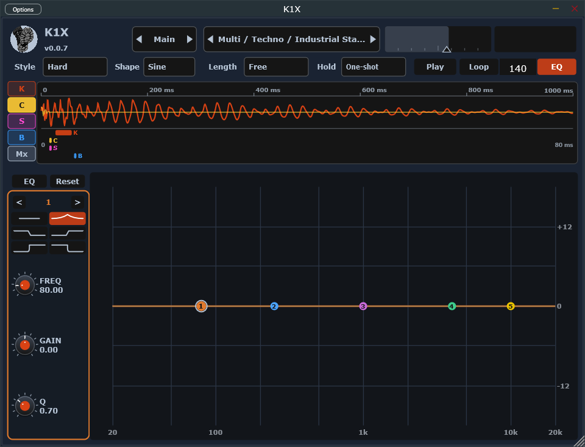

K1X
Kick drum. 909, 808, and friends.
Tune, click, decay, drive, filters, extra layers and Mix, then a parallel FX send and post EQ. Length and reverb predelay can snap to the DAW tempo.
Part of Stupid Audio — five free instruments in one pack. The other four live over there.





Sound
Sine or triangle body with a pitch drop and a noise click, then saturation, high-pass, tone, and lo/hi shelves. The rail adds Bass, Noise, Click, Sweep, or Sample. Mix is Duck plus per-layer faders. Effects is Dry/FX (Dist Soft / Hard / Fold / Diode, delay, reverb) plus post EQ. Reverb predelay is milliseconds, or Sync detents the knob to 1/64–1/8. Spectrum is the processed output. The waveform is the layered mix before post FX.
Standalone
Play is a one-shot. Loop (BPM 40–240, default 140) repeats until you hit Play again. Export WAV writes a 24-bit stereo shot including FX tail, 44.1 or 48 kHz. Norm (default on) peaks to −0.1 dBTP. With Loop on, the file is 2 bars at that BPM.